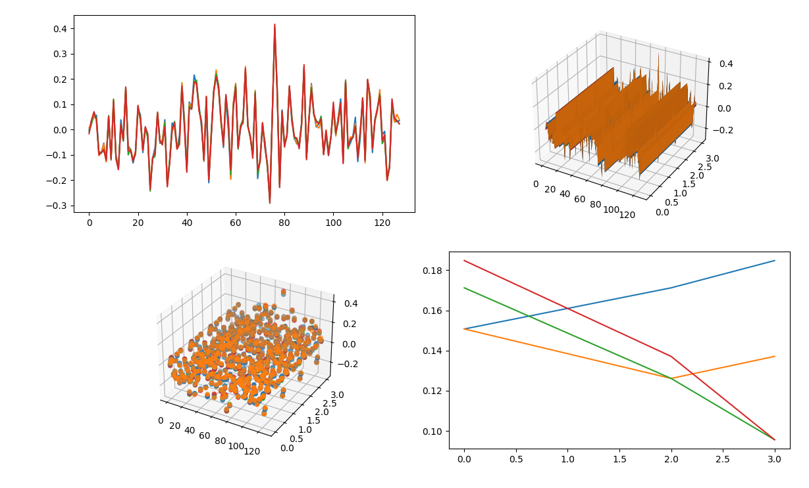
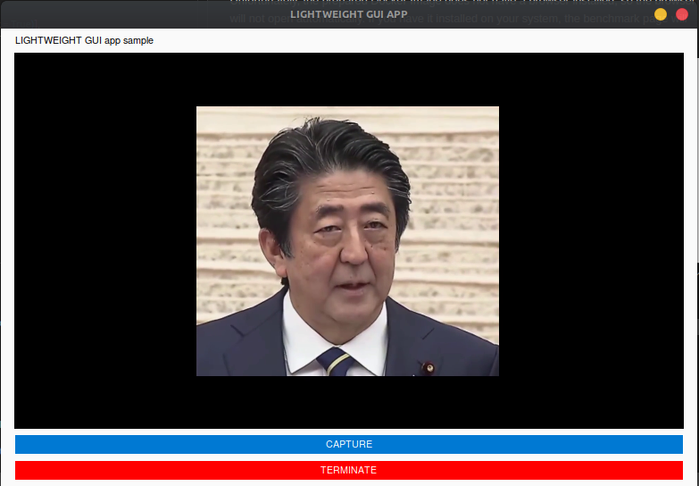

example package
Submodules
example.CTKtest module
CustomTkinter test.
This is test of CustomTkinter.
example.aligned_crop_face module
example.anti_spoof module
example.average_face module
License for the Code.
Copyright Owner: Yoshitsugu Kesamaru Please refer to the separate license file for the license of the code.
- example.average_face.align_face(image)
example.benchmark_CUI module
Example of benchmark for face recognition.
- Summary:
In this example, you can test benchmark for CUI mode.
After running, it will automatically display the benchmark in your browser. To quite, press “Cnt + c” in terminal(or console) where this example is running.
Example
python3 benchmark_CUI.py
- Source code:
- example.benchmark_CUI.main(exec_times: int = 50) None
Open automatically benchmark on you’re own browser.
- Parameters
exec_times (int, optional) – Number of frames for process. Defaults to 50 times.
- Returns
None
example.benchmark_GUI_window module
Example of benchmark for face recognition.
- Summary:
In this example, you can test benchmark for create GUI window.
After running, it will automatically display the benchmark in your browser. To quite, press “Cnt + c” in terminal(or console) where this example is running.
Example
python3 example/benchmark_GUI_window.py
- Result:


- Source code:
- example.benchmark_GUI_window.logger = <Logger /home/terms/bin/FACE01/example/benchmark_GUI_window.py (INFO)>
Initialize and Setup logger. When coding a program that uses FACE01, code initialize and logger first. This will read the configuration file config.ini and log errors etc.
- example.benchmark_GUI_window.main(exec_times: int = 50) None
Make GUI window and benchmark on you’re own browser.
- Parameters
exec_times (int, optional) – Number of frames for process. Defaults to 50 times.
- Returns
None
example.combination_counter module
example.combination_similarity module
License for the Code.
Copyright Owner: Yoshitsugu Kesamaru Please refer to the separate license file for the license of the code.
example.data_augmentation module
License for the Code.
Copyright Owner: Yoshitsugu Kesamaru Please refer to the separate license file for the license of the code.
- example.data_augmentation.logger = <Logger /home/terms/bin/FACE01/example/data_augmentation.py (INFO)>
Initialize and Setup logger. When coding a program that uses FACE01, code initialize and logger first. This will read the configuration file config.ini and log errors etc.
- example.data_augmentation.main(dir_path: str, size: int = 224, num_jitters: int = 10, initial_value: float = -0.1, closing_value: float = 0.1, step_value: float = 0.01)
Simple example.
This simple example accepts a directory path and recursively loads the directories for data augmentation.
- Parameters
dir_path (str) – target directory path.
size (int, optional) – image size. Defaults to 224.
num_jitters (int, optional) – number of jitters. Defaults to 10.
initial_value (float, optional) – initial value. Defaults to -0.1.
closing_value (float, optional) – closing value. Defaults to 0.1.
step_value (float, optional) – step value. Defaults to 0.01.
- Returns
None
See also
example.data_augmentation_mp module
License for the Code.
Copyright Owner: Yoshitsugu Kesamaru Please refer to the separate license file for the license of the code.
- example.data_augmentation_mp.logger = <Logger /home/terms/bin/FACE01/example/data_augmentation_mp.py (INFO)>
Initialize and Setup logger. When coding a program that uses FACE01, code initialize and logger first. This will read the configuration file config.ini and log errors etc.
- example.data_augmentation_mp.main(dir_path: str, size: int = 224, num_jitters: int = 10, initial_value: float = -0.1, closing_value: float = 0.1, step_value: float = 0.01, max_workers: Optional[int] = None)
- example.data_augmentation_mp.process_data(dir: str, size: int, initial_value: float, closing_value: float, step_value: float, num_jitters: int)
example.data_structure module
Data structure of FACE01.
- Summary:
In this example, you can learn data structure of FACE01.
Example
python3 example data_structure.py
- Config.ini setting:
Data structure of FACE01 is closely related to what you set in config.ini. The contents of config.ini described below are the settings for face-detection and face-recognition. GUI windows are not displayed.
[DEFAULT] # [DEFAULT] section is for simple example. # This [DEFAULT] setting for only use CUI mode. # Also, This setting is for user who's PC is not installed Nvidia GPU card. # [DEFAULT] section is the inheritor of all sections. headless = True anti_spoof = False output_debug_log = False log_level = info set_width = 750 similar_percentage = 99.1 jitters = 0 preset_face_images_jitters = 10 upsampling = 0 mode = hog frame_skip = 5 number_of_people = 10 use_pipe = True model_selection = 0 min_detection_confidence = 0.6 person_frame_face_encoding = False same_time_recognize = 2 set_area = NONE movie = assets/test.mp4 user = passwd = rectangle = False target_rectangle = False draw_telop_and_logo = False default_face_image_draw = False show_overlay = False alpha = 0.3 show_percentage = False show_name = False crop_face_image = True frequency_crop_image = 5 crop_with_multithreading = False Python_version = 3.8.10 cpu_freq = 2.5 cpu_count = 4 memory = 4 gpu_check = True calculate_time = False show_video = False number_of_crops = 0
- Result:
Executing this example script will output the following contents. (The output string has been formatted to make it easier to read.)
frame_datas: { 'img': array([[[0, 0, 0], [0, 0, 0], ..., [0, 0, 0], dtype=uint8), 'face_location_list': [(165, 449, 287, 327), (240, 435, 391, 284)], 'overlay': array([[[ 0, 0, 70], ..., [ 88, 169, 127]], dtype=uint8), 'person_data_list': [ { 'name': '安倍晋三', 'pict': 'output/安倍晋三_2022,10,08,19,17,41,346789_0.2.png', 'date': '2022,10,08,19,17,41,344598', 'location': (165, 449, 287, 327), 'percentage_and_symbol': '99.7%' }, { 'name': 'Unknown', 'pict': 'output/安倍晋三_2022,10,08,19,17,41,346789_0.2.png', 'date': '2022,10,08,19,17,41,344598', 'location': (240, 435, 391, 284), 'percentage_and_symbol': '' } ] }
- Data structure:
The frame_datas_array variable is a dictionary-like variable that contains the variables described below.
Dictionary
img: NDArray of a frame
face_location_list: List of face-coordinates
overlay: Shallow copy of img
person_data_list: List of person-coordinate which is included in face_location_list
In addition, the person_data_list variable is an array that contains the variables described below.
List
Dictionary
name: name
pict: Saved image’s file name which is cropped by face-coordinate in a frame
date:
location: Face-coordinate
percentage_and_symbol: xx%
- Source code:
- example.data_structure.main(exec_times: int = 50) None
Output data structure.
Data structure of FACE01 can be get as frame_datas_array variable.
- Parameters
exec_times (int, optional) – Number of frames for process. Defaults to 50 times.
- Returns
None
example.detect_eye_blink module
License for the Code.
Copyright Owner: Yoshitsugu Kesamaru Please refer to the separate license file for the license of the code.
- example.detect_eye_blink.main(exec_times: int = 50) None
Display window.
- Parameters
exec_times (int, optional) – Receive value of number which is processed. Defaults to 50 times.
- Returns
None
example.display_GUI_window module
License for the Code.
Copyright Owner: Yoshitsugu Kesamaru Please refer to the separate license file for the license of the code.
- example.display_GUI_window.main(exec_times: int = 50) None
Display window.
- Parameters
exec_times (int, optional) – Receive value of number which is processed. Defaults to 50 times.
- Returns
None
example.display_GUI_window_efficientnetv2_arcface module
License for the Code.
Copyright Owner: Yoshitsugu Kesamaru Please refer to the separate license file for the license of the code.
- example.display_GUI_window_efficientnetv2_arcface.main(exec_times: int = 50) None
Display window.
- Parameters
exec_times (int, optional) – Receive value of number which is processed. Defaults to 50 times.
- Returns
None
example.distort_barrel module
example.draw_datas module
Example of to draw datas using matplotlib.
- Summary:
In this example, you can learn how to draw datas.
Example
python3 example/draw_datas.py
- Result:
- 

- Source code:
{kind=link}
- example.draw_datas.f_norm(face_encoded_list, face_encoded_data)
Return Frobenius norm.
- Parameters
face_encoded_list (List) – Face encoded list
face_encoded_data (np.NDArray) – Face encoded data as np.ndarray
- Returns
Frobenius norm
- Return type
Any
- example.draw_datas.main(exec_times: int = 50) None
Simple example.
This simple example script prints out results of face encoded datas.
- Parameters
exec_times (int, optional) – Number of frames for process. Defaults to 50 times.
- Returns
None
example.example_logging module
Example of benchmark for face recognition.
- Summary:
In this example, you can learn about log functions.
- You can choose from two types of log_level,
info
debug
in CONFIG: Dict = Initialize(‘DEFAULT’, ‘log_level’).initialize().
Example
# Initialize
CONFIG: Dict = Initialize('DEFAULT', 'debug').initialize()
# Set up logger
logger = Logger(CONFIG['log_level']).logger(__file__, CONFIG['RootDir'])
Example
python3 example/logging.py
- Source code:
- example.example_logging.logger = <Logger /home/terms/bin/FACE01/example/example_logging.py (DEBUG)>
Initialize and Setup logger. When coding a program that uses FACE01, code initialize and logger first. This will read the configuration file config.ini and log errors etc.
- example.example_logging.main(exec_times: int = 50) None
Setup logger example.
Output log with define log-level.
- Parameters
exec_times (int, optional) – Number of frames for process. Defaults to 50 times.
- Returns
None
example.face_coordinates module
Get only face coordinates.
- Summary:
In this example, you can learn how to get face coordinates and cropped face images.
Example
python3 example/face_coordinates.py
- Config.ini setting:
Set config.ini as described below as an example to get face-coordinate and get cropped face images.
[FACE-COORDINATE] headless = True anti_spoof = False output_debug_log = False log_level = info set_width = 750 similar_percentage = 99.1 jitters = 0 preset_face_images_jitters = 100 upsampling = 0 frame_skip = 5 number_of_people = 10 use_pipe = True model_selection = 0 min_detection_confidence = 0.4 person_frame_face_encoding = False same_time_recognize = 10 set_area = NONE movie = assets/some_people.mp4 crop_face_image = True frequency_crop_image = 5 crop_with_multithreading = False number_of_crops = 0 show_overlay = True
- Result:
Executing this example script will output the following contents.
face coordinates: [(156, 233, 304, 85), (114, 593, 276, 431), (130, 704, 349, 485), (319, 334, 449, 204), (281, 645, 405, 521), (23, 810, 313, 520), (349, 394, 573, 170), (244, 302, 408, 138), (344, 692, 514, 522), (21, 256, 215, 62)] }
- Source code:
- example.face_coordinates.logger = <Logger /home/terms/bin/FACE01/example/face_coordinates.py (INFO)>
Initialize and Setup logger. When coding a program that uses FACE01, code initialize and logger first. This will read the configuration file config.ini and log errors etc.
- example.face_coordinates.main(exec_times: int = 50) None
Output face coordinates.
- Parameters
exec_times (int, optional) – Number of frames for process. Defaults to 50 times.
- Returns
None
example.faiss_combination_similarity module
An example of code that loads all npKnown.npz files in the specified directory, and detects specified combinations of cosine similarities using faiss.
- Summary:
In this example, you can learn how to load all npKnown.npz files in the specified directory below and detect specified combinations of cosine similarities using faiss.
- Usage:
python3 example/faiss_combination_similarity.py- Source code:
example.get_encoded_data module
Example of to get face encoded data.
- Summary:
In this example, you can learn how to get face encoded datas.
Example
python3 example/get_encoded_data.py
Note
Make sure this example must be applied for ‘one person’. Not more two persons in same input.
- Source code:
- example.get_encoded_data.logger = <Logger /home/terms/bin/FACE01/example/get_encoded_data.py (INFO)>
Initialize and Setup logger. When coding a program that uses FACE01, code initialize and logger first. This will read the configuration file config.ini and log errors etc.
- example.get_encoded_data.main(exec_times: int = 50) None
Simple example.
This simple example script prints out results of face encoded datas.
- Parameters
exec_times (int, optional) – Number of frames for process. Defaults to 50 times.
- Returns
None
example.get_encoded_data_efficientnetv2_arcface module
Example of simple face encode script with EfficientNetV2 Arcface model.
- Summary:
In this example, you can learn how to execute FACE01 as simple to use “efficientnetv2_arcface.onnx” model. This script loads a face image file and outputs the feature vector of the face image. The feature vector is 512-dimensional vector, which is from efficientnetv2_arcface.onnx model.
Example
python3 example/get_encoded_data_efficientnetv2_arcface.py
- Source code:
example.jitter module
Example of to jitter images.
- Summary:
In this example, you can learn how to get jittered images.
- param path
Directory path where images containing faces exist. num_jitters (int, optional): Number of jitters. Defaults to 5. size (int, optional): Resize the image to the specified size. Defaults to 200. disturb_color (bool, optional): Disturb the color. Defaults to True.
- type path
str
- returns
None
Example
python example/jitter.py path 100 200 True
{kind=link}
- example.jitter.logger = <Logger /home/terms/bin/FACE01/example/jitter.py (INFO)>
Initialize and Setup logger. When coding a program that uses FACE01, code initialize and logger first. This will read the configuration file config.ini and log errors etc.
- example.jitter.main(path: str, num_jitters: int = 5, size: int = 200, disturb_color: bool = True) None
Simple example.
This simple example script takes a path which contained png, jpg, jpeg files in the directory, jitter and saves them.
- Parameters
path (str) – absolute path
num_jitters (int, optional) – Number of jitters. Defaults to 5.
size (int, optional) – Resize the image to the specified size. Defaults to 200.
disturb_color (bool, optional) – Disturb the color. Defaults to True.
example.lightweight_GUI module
Example of LIGHTWEIGHT GUI window.
- Summary:
In this example, you can learn how to make LIGHTWEIGHT GUI application. PySimpleGUI is used for GUI display. See below for how to use PySimpleGUI.
Note
Face detection and face recognition processing are performed only when the capture button is pressed, so it is useful in situations where only the CPU can be used. (Assuming that the GPU cannot be used)
Example
python3 example/lightweight_GUI.py
- Results:
- 
[2023-01-23 22:33:18,752] [face01lib.load_preset_image] [load_preset_image.py] [INFO] Loading npKnown.npz 安倍晋三 similarity 99.7% coordinate (134, 431, 248, 317) time 2023,01,23,22,33,23,445574 output output/安倍晋三_2023,01,23,22,33,23,446640_0.19.png -------
- Source code:
{kind=link}
- example.lightweight_GUI.logger = <Logger /home/terms/bin/FACE01/example/lightweight_GUI.py (INFO)>
Initialize and Setup logger. When coding a program that uses FACE01, code initialize and logger first. This will read the configuration file config.ini and log errors etc.
- example.lightweight_GUI.main(exec_times: int = 500) None
LIGHTWEIGHT GUI application example.
- Parameters
exec_times (int, optional) – Receive value of number which is processed. Defaults to 500.
- Returns
None
example.make_ID_card module
Example of simple face encode script with EfficientNetV2 Arcface model.
- Summary:
In this example, you can learn how to make ID card sample with QR code for multimodal certification.
Example
python3 example/make_ID_card.py
{kind=link}
example.make_npKnown_file module
License for the Code.
Copyright Owner: Yoshitsugu Kesamaru Please refer to the separate license file for the license of the code.
example.similarity module
License for the Code.
Copyright Owner: Yoshitsugu Kesamaru Please refer to the separate license file for the license of the code.
example.simple module
Example of simple face recognition script.
- Summary:
In this example, you can learn how to execute FACE01 as simple.
Example
python3 example/simple.py
- Source code:
- example.simple.logger = <Logger /home/terms/bin/FACE01/example/simple.py (INFO)>
Initialize and Setup logger. When coding a program that uses FACE01, code initialize and logger first. This will read the configuration file config.ini and log errors etc.
- example.simple.main(exec_times: int = 50) None
Simple example.
This simple example script prints out results of face recognition process.
- Parameters
exec_times (int, optional) – Number of frames for process. Defaults to 50 times.
- Returns
None
example.simple_efficientnetv2_arcface module
example.window1 module
ttkbootstrap https://ttkbootstrap.readthedocs.io/en/version-0.5/themes.html
- class example.window1.Application
Bases:
Tk
example.window2 module
- class example.window2.DirectoryObserver(path, callback)
Bases:
object
- class example.window2.ImageBrowser(master, path)
Bases:
object
- example.window2.load_images(self, path)